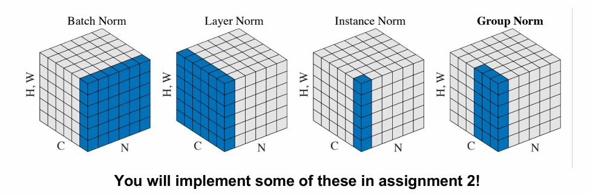

Accepts a volume of size \(W_1 \times H_1 \times D_1\)
Requires four hyperparameters:
Number of filters \(K\),
their spatial extent \(F\),
the stride \(S\),
the amount of zero padding \(P\)
Produces a volume of size \(W_2 \times H_2 \times D_2\) where:
\(W_2 = \displaystyle \frac{W_1 - F + 2P}{S} + 1\)
\(H_2 = \displaystyle \frac{H_1 - F + 2P}{S} + 1\) (i.e. width and height are computed equally by symmetry)
\(D_2 = K\)
With parameter sharing, it introduces \(F \cdot F \cdot D_1\) weights per filter, for a total of
\((F \cdot F \cdot D_1) \cdot K\) weights and \(K\) biases.
In the output volume, the \(d\)-th depth slice (of size \(W_2 \times H_2\)) is the result of performing a valid convolution of the \(d\)-th filter over the input volume with a stride of \(S\), and then offset by \(d\)-th bias.
defmax_pool_backward_fast(dout,cache):""" Vectorized backward pass for a max-pooling layer. Inputs: - dout: Upstream derivatives, shape (N, C, H', W') - cache: Tuple of (x, pool_param) from forward pass Returns: - dx: Gradient with respect to x, shape same as x """x,pool_param=cacheN,C,H,W=x.shapeph,pw,stride=pool_param['pool_height'],pool_param['pool_width'],pool_param['stride']H_out,W_out=dout.shape[2],dout.shape[3]dx=np.zeros_like(x)forninrange(N):forcinrange(C):foriinrange(H_out):forjinrange(W_out):h_start=i*strideh_end=h_start+phw_start=j*stridew_end=w_start+pw# 当前窗口window=x[n,c,h_start:h_end,w_start:w_end]max_val=np.max(window)# 梯度传播只传给最大值所在位置mask=(window==max_val)dx[n,c,h_start:h_end,w_start:w_end]+=mask*dout[n,c,i,j]returndx
defbatchnorm_forward(x,gamma,beta,bn_param):""" Forward pass for batch normalization. During training the sample mean and (uncorrected) sample variance are computed from minibatch statistics and used to normalize the incoming data. During training we also keep an exponentially decaying running mean of the mean and variance of each feature, and these averages are used to normalize data at test-time. At each timestep we update the running averages for mean and variance using an exponential decay based on the momentum parameter: running_mean = momentum * running_mean + (1 - momentum) * sample_mean running_var = momentum * running_var + (1 - momentum) * sample_var Note that the batch normalization paper suggests a different test-time behavior: they compute sample mean and variance for each feature using a large number of training images rather than using a running average. For this implementation we have chosen to use running averages instead since they do not require an additional estimation step; the torch7 implementation of batch normalization also uses running averages. Input: - x: Data of shape (N, D) - gamma: Scale parameter of shape (D,) - beta: Shift paremeter of shape (D,) - bn_param: Dictionary with the following keys: - mode: 'train' or 'test'; required - eps: Constant for numeric stability - momentum: Constant for running mean / variance. - running_mean: Array of shape (D,) giving running mean of features - running_var Array of shape (D,) giving running variance of features Returns a tuple of: - out: of shape (N, D) - cache: A tuple of values needed in the backward pass """mode=bn_param["mode"]eps=bn_param.get("eps",1e-5)momentum=bn_param.get("momentum",0.9)N,D=x.shaperunning_mean=bn_param.get("running_mean",np.zeros(D,dtype=x.dtype))running_var=bn_param.get("running_var",np.zeros(D,dtype=x.dtype))ifmode=="train":# Step 1: 计算均值sample_mean=np.mean(x,axis=0)# Step 2: 计算方差sample_var=np.var(x,axis=0)# Step 3: 标准化x_hat=(x-sample_mean)/np.sqrt(sample_var+eps)# Step 4: 缩放 + 平移out=gamma*x_hat+beta# 缓存中间值供反向传播使用cache=(x,x_hat,sample_mean,sample_var,gamma,beta,eps)# 更新运行中的统计量running_mean=momentum*running_mean+(1-momentum)*sample_meanrunning_var=momentum*running_var+(1-momentum)*sample_varelifmode=="test":x_hat=(x-running_mean)/np.sqrt(running_var+eps)out=gamma*x_hat+betacache=Noneelse:raiseValueError('Invalid forward batchnorm mode "%s"'%mode)# Store the updated running means back into bn_parambn_param["running_mean"]=running_meanbn_param["running_var"]=running_varreturnout,cache
Remarks
The computation of \(\mu\) and \(\sigma\) won't happen in testing. Instead, they will be predicted with train data.
defbatchnorm_backward(dout,cache):""" Backward pass for batch normalization. For this implementation, you should write out a computation graph for batch normalization on paper and propagate gradients backward through intermediate nodes. Inputs: - dout: Upstream derivatives, of shape (N, D) - cache: Variable of intermediates from batchnorm_forward. Returns a tuple of: - dx: Gradient with respect to inputs x, of shape (N, D) - dgamma: Gradient with respect to scale parameter gamma, of shape (D,) - dbeta: Gradient with respect to shift parameter beta, of shape (D,) """x,x_hat,mean,var,gamma,beta,eps=cacheN,D=x.shape# Gradients of beta and gammadbeta=np.sum(dout,axis=0)# (D,)dgamma=np.sum(dout*x_hat,axis=0)# (D,)# Gradient of x_hatdxhat=dout*gamma# (N, D)# Intermediate partialsdvar=np.sum(dxhat*(x-mean)*-0.5*(var+eps)**(-1.5),axis=0)# (D,)dmean=np.sum(dxhat*-1/np.sqrt(var+eps),axis=0)+ \
dvar*np.mean(-2*(x-mean),axis=0)# (D,)# Final dxdx=dxhat/np.sqrt(var+eps)+dvar*2*(x-mean)/N+dmean/N# (N, D)returndx,dgamma,dbeta
defbatchnorm_backward_alt(dout,cache):""" Alternative backward pass for batch normalization. For this implementation you should work out the derivatives for the batch normalizaton backward pass on paper and simplify as much as possible. You should be able to derive a simple expression for the backward pass. See the jupyter notebook for more hints. Note: This implementation should expect to receive the same cache variable as batchnorm_backward, but might not use all of the values in the cache. Inputs / outputs: Same as batchnorm_backward """x,x_hat,mean,var,gamma,beta,eps=cacheN,D=dout.shape# Gradients w.r.t. gamma and beta (same as before)dbeta=np.sum(dout,axis=0)# (D,)dgamma=np.sum(dout*x_hat,axis=0)# (D,)# Simplified dx expressiondx=(1./N)*gamma/np.sqrt(var+eps)* \
(N*dout-np.sum(dout,axis=0)-x_hat*np.sum(dout*x_hat,axis=0))returndx,dgamma,dbeta
Layer Norm
Due to the disadvantages of Batch Norm:
- Sensitive to batch size.
- Not suitable for RNNs and Transformers (Attention based models)
- Behaves differently during training and inference (due to running statistics)
deflayernorm_forward(x,gamma,beta,ln_param):""" Forward pass for layer normalization. During both training and test-time, the incoming data is normalized per data-point, before being scaled by gamma and beta parameters identical to that of batch normalization. Note that in contrast to batch normalization, the behavior during train and test-time for layer normalization are identical, and we do not need to keep track of running averages of any sort. Input: - x: Data of shape (N, D) - gamma: Scale parameter of shape (D,) - beta: Shift paremeter of shape (D,) - ln_param: Dictionary with the following keys: - eps: Constant for numeric stability Returns a tuple of: - out: of shape (N, D) - cache: A tuple of values needed in the backward pass """eps=ln_param.get("eps",1e-5)# Step 1: Compute mean and variance per data point (along axis=1)mean=np.mean(x,axis=1,keepdims=True)# shape (N, 1)var=np.var(x,axis=1,keepdims=True)# shape (N, 1)# Step 2: Normalizex_hat=(x-mean)/np.sqrt(var+eps)# shape (N, D)# Step 3: Scale and shiftout=gamma*x_hat+beta# shape (N, D)cache=(x,x_hat,mean,var,gamma,beta,eps)returnout,cache
deflayernorm_backward(dout,cache):""" Backward pass for layer normalization. For this implementation, you can heavily rely on the work you've done already for batch normalization. Inputs: - dout: Upstream derivatives, of shape (N, D) - cache: Variable of intermediates from layernorm_forward. Returns a tuple of: - dx: Gradient with respect to inputs x, of shape (N, D) - dgamma: Gradient with respect to scale parameter gamma, of shape (D,) - dbeta: Gradient with respect to shift parameter beta, of shape (D,) """x,x_hat,mean,var,gamma,beta,eps=cacheN,D=x.shape# dbeta 和 dgamma 很简单：按列求和dbeta=np.sum(dout,axis=0)# shape (D,)dgamma=np.sum(dout*x_hat,axis=0)# shape (D,)# dx_hatdxhat=dout*gamma# shape (N, D)# 参考 BatchNorm 的链式法则公式，适配按行归一化std=np.sqrt(var+eps)# shape (N, 1)# 向量形式的 dxdx=(1./D)*(1/std)*(D*dxhat-np.sum(dxhat,axis=1,keepdims=True)-x_hat*np.sum(dxhat*x_hat,axis=1,keepdims=True))returndx,dgamma,dbeta
Other normalizations

C: Channels (Features), N Batch Size, H, W: data dimentions.
Regularization
Stochastic Depth
(?)
Dropout
In each forward pass, randomly set some neurons to zero. Probability of dropping is a hyperparameter; 0.5 is common.
At test time, all neurons are active always.
A rule to be obeyed
The output at test time must be the same as the expected output at training time
defdropout_forward(x,dropout_param):""" Performs the forward pass for (inverted) dropout. Inputs: - x: Input data, of any shape - dropout_param: A dictionary with the following keys: - p: Dropout parameter. We keep each neuron output with probability p. - mode: 'test' or 'train'. If the mode is train, then perform dropout; if the mode is test, then just return the input. - seed: Seed for the random number generator. Passing seed makes this function deterministic, which is needed for gradient checking but not in real networks. Outputs: - out: Array of the same shape as x. - cache: tuple (dropout_param, mask). In training mode, mask is the dropout mask that was used to multiply the input; in test mode, mask is None. NOTE: Please implement **inverted** dropout, not the vanilla version of dropout. See http://cs231n.github.io/neural-networks-2/#reg for more details. NOTE 2: Keep in mind that p is the probability of **keep** a neuron output; this might be contrary to some sources, where it is referred to as the probability of dropping a neuron output. """p,mode=dropout_param["p"],dropout_param["mode"]if"seed"indropout_param:np.random.seed(dropout_param["seed"])mask=Noneout=Noneifmode=="train":# 生成 dropout mask，1的概率为p，0的概率为1-pmask=(np.random.rand(*x.shape)<p)/p# 注意是除以 pout=x*mask# 应用 maskelifmode=="test":out=xcache=(dropout_param,mask)out=out.astype(x.dtype,copy=False)returnout,cache
defdropout_backward(dout,cache):""" Perform the backward pass for (inverted) dropout. Inputs: - dout: Upstream derivatives, of any shape - cache: (dropout_param, mask) from dropout_forward. """dropout_param,mask=cachemode=dropout_param["mode"]dx=Noneifmode=="train":dx=dout*maskelifmode=="test":dx=doutreturndx
Fractional Max Pooling
(?)
Activation Functions
Sigmoid
\[
\sigma(x) = 1 / (1 + \mathrm{e}^{-x})
\]
Key problem: Large positive or negative values can “kill” the gradients.
ReLU
\[
f(x) = \max \{0, x\}
\]
Main benefit: High efficiency, does not saturate in \(+\) region
Key Problem: Not zero-centered, deaded values when \(x < 0\).
Dropout (Add some randomness and average them when testing)
Horizontal flips and random crops and scales (for figures)
Color jitter (Randomize brightness and contrast)
Cut out (Set some random regions of an image to zero when training and use full picture when testing)
Transfer Learning
A way to train with a small amount of data. Just use the pretrained model of other image classifier and simpoly retrain the classifier layer for new dataset/
A rule to be obeyed
The output at test time must be the same as the expected output at training time